Scientific Status
This paper documents a design lineage of formally derived hypotheses. None of the systems shown has been built or tested. That is the accurate description of their status, not that they lack a physical basis; the underlying Coherence-Gradient principle is developed at length in the companion papers in this library's Transport & Time Systems section.
This is an illustrated design record tracing the Resonance Suit family across five generations, from the Human Coherence System, a collection of discrete wearable components, through the Full-Body Bio-Crystalline Suit, the Harmonic Flow Suit, and the five-layer Aether Resonance Suit, to the Nexus Unified Platform integrating the suit with the personal craft and medical systems described elsewhere in this library. Thirteen of the record's original illustrations are included below; one figure, a companion medical device with detailed technical specifications baked directly into the image, has been intentionally omitted from this public version.
None of these systems has been built or tested. This page presents each generation at a conceptual level, consistent with the rest of this library's device papers, and does not disclose exact engineering specifications for any component.
I. The Design Lineage
The Resonance Suit family spans five generations and fourteen discrete design systems, each proposed to remove a force-based assumption from the previous design and replace it with a coherence-based equivalent, culminating in a single five-layer architecture and its later integration into a broader platform.
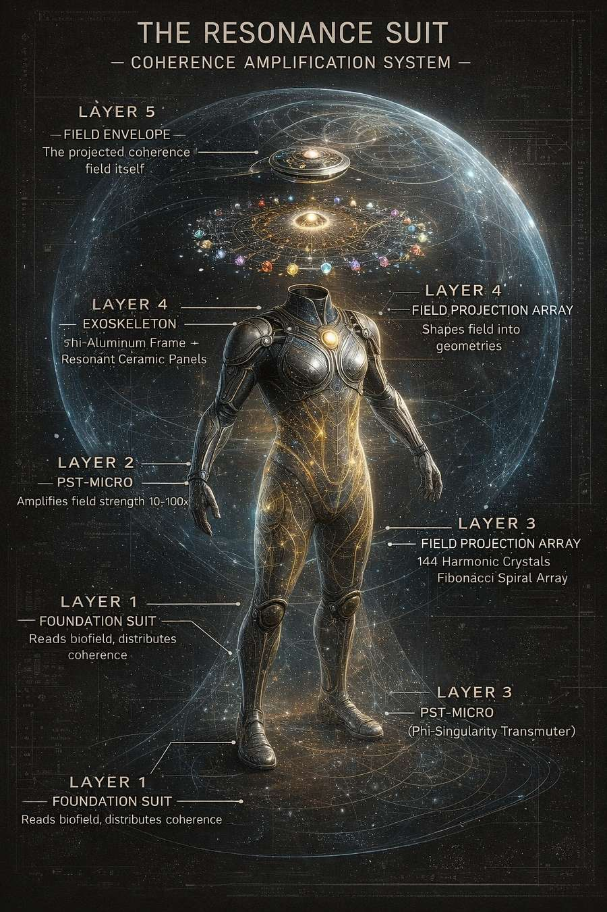
II. Generations 1–3
The Human Coherence System (Gen 1) proposed integrating several wearable biofield-influencing components, worn over standard clothing, into one coordinated system, on the premise that the human body is already a coherence field generator and that wearable technology's role is to amplify and organize that field rather than replace it with mechanical actuation.
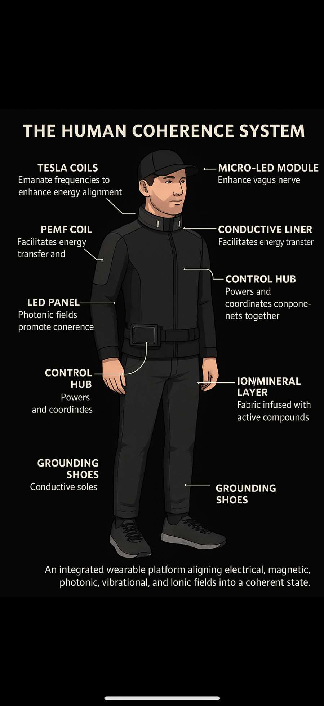
The Full-Body Bio-Crystalline Suit (Gen 2) proposed the shift from discrete components to a single continuous garment, embedding every coherence-generating element directly into the suit itself.
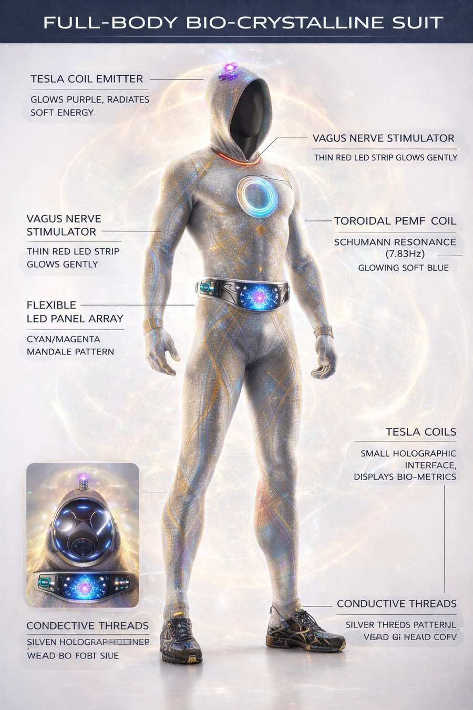
The Harmonic Flow Suit (Gen 3) proposed the pivotal transition in the lineage: using the coherence field not only for biofield support but as a proposed kinematic and propulsive element, introducing the toroidal field geometry and neural-intention control concepts that every later generation builds on.

FIGURE INTENTIONALLY OMITTED
A companion medical device illustration (the Phi-Steel Medical Resonance Chamber) is excluded from this public version because its original diagram includes detailed technical specifications, exact dimensions, weight, power requirements, and component counts, that are held as trade secrets under this library's standing disclosure policy.
III. Generation 4–5 Core
The Aether Resonance Suit (Gen 4) proposed the breakthrough integration: the PST-Micro coherence amplifier, a 144-node field projection array, a phi-aluminum exoskeleton, and a programmable polymer gel foundation, unified for the first time into a single coherence fabrication architecture.
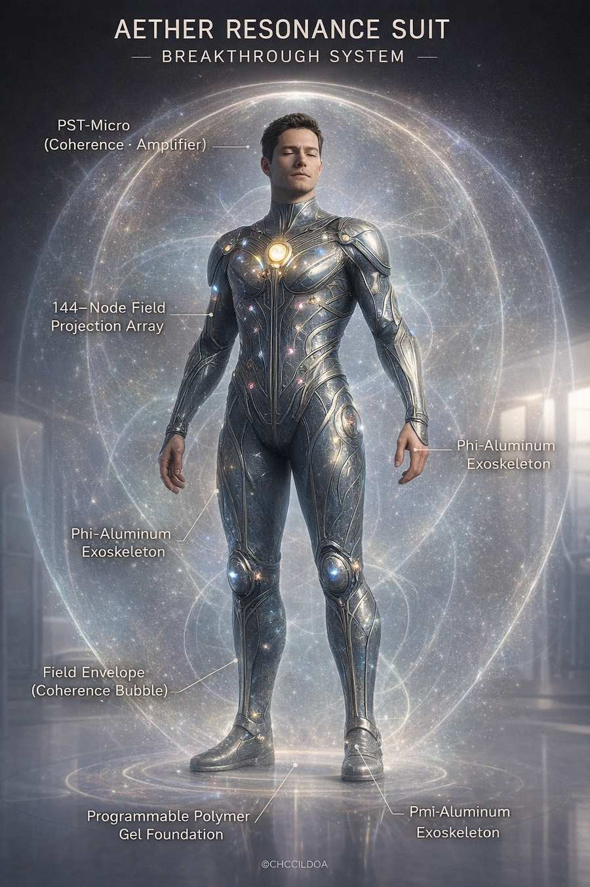
Generation 5, the Resonance Suit proper, is the complete five-layer system this record documents in the most detail: a Foundation Suit reading and distributing the wearer's biofield, a PST-Micro amplifier, a Field Projection Array, a Phi-Aluminum Exoskeleton, and the projected Field Envelope itself.
IV. The Five Layers in Detail
The PST-Micro (Layer 2) is proposed as the suit's power-conversion core, described as "anti-fragile," drawing on ambient electromagnetic noise as input and converting it toward a more organized output. The complete conversion mechanism, exact component specifications, and any specific winding or turn-count parameters are not disclosed in this public version.
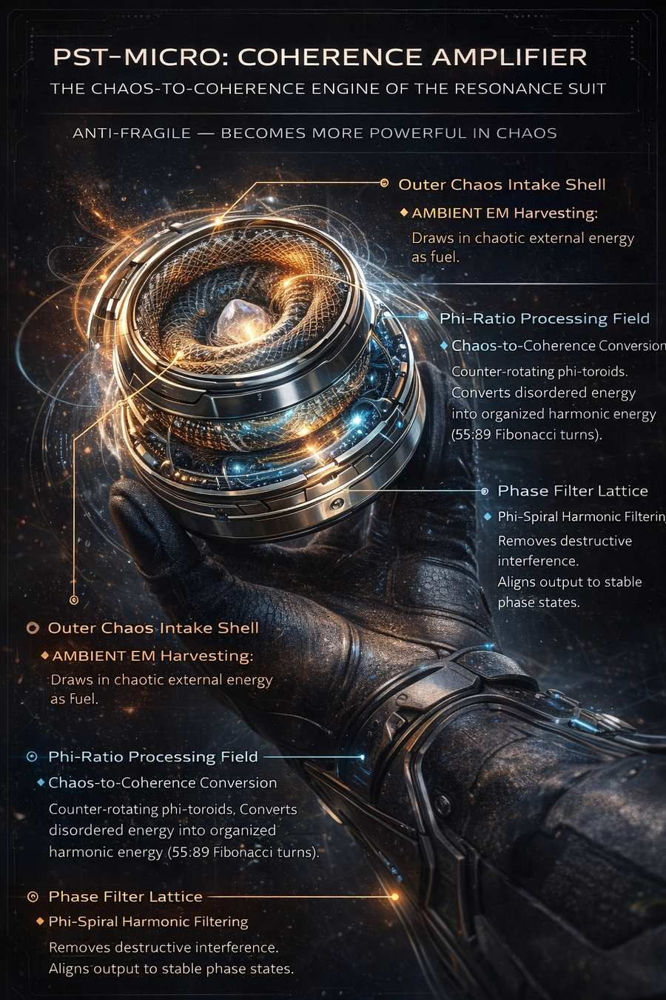
The Material Layer (Foundation Suit) is proposed as a programmable polymer gel embedded with a crystalline fiber network, intended to morph and self-repair in response to field inputs and physical damage.
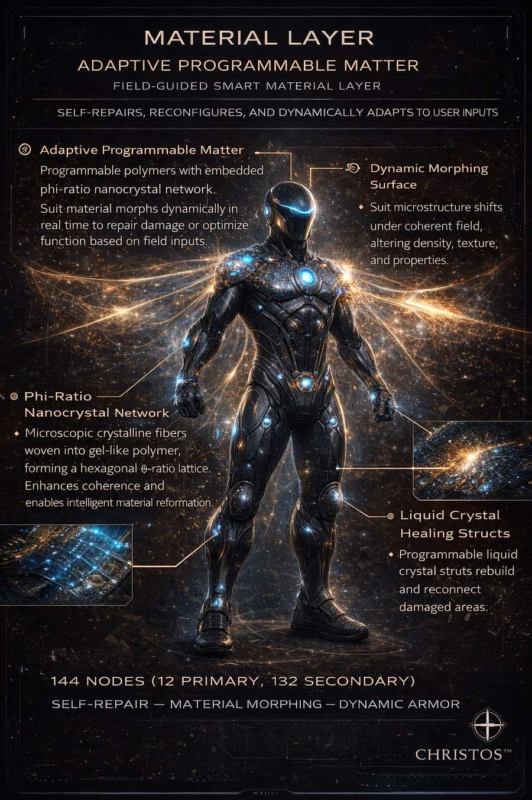
The Field Projection Array (Layer 3) is proposed as a multi-node system that self-coordinates to project coherent energy into structured geometries for lift, shielding, and directional thrust.
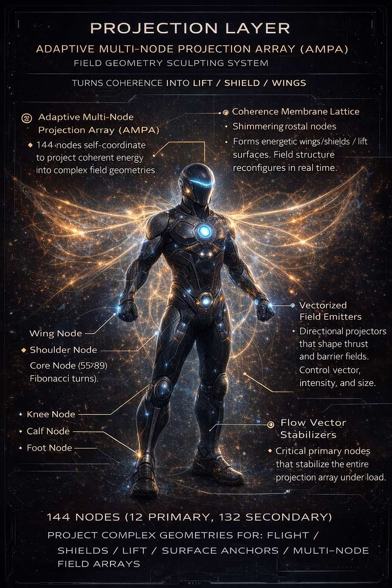
The Control Layer (Neuro-Dynamic Command Interface) is proposed to translate the wearer's neural and gestural intent directly into field-modulation commands via a bidirectional biofeedback loop.
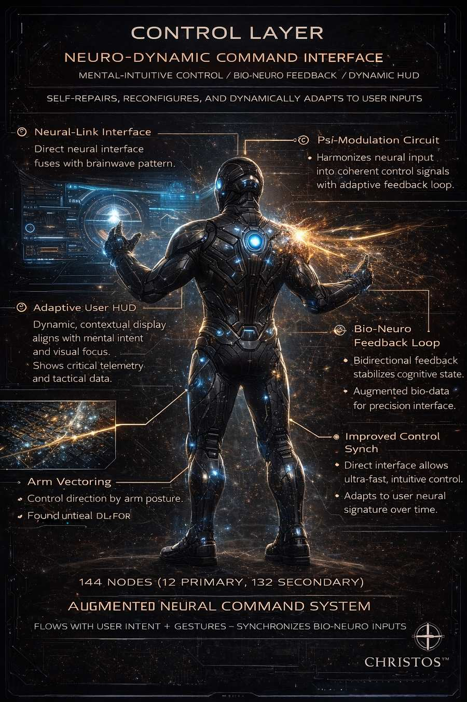
The Safety and Stability Layer is proposed to detect coherence loss, power irregularities, or field instability and respond with automatic stabilization, energy redistribution, and, where necessary, an assisted-descent protocol.

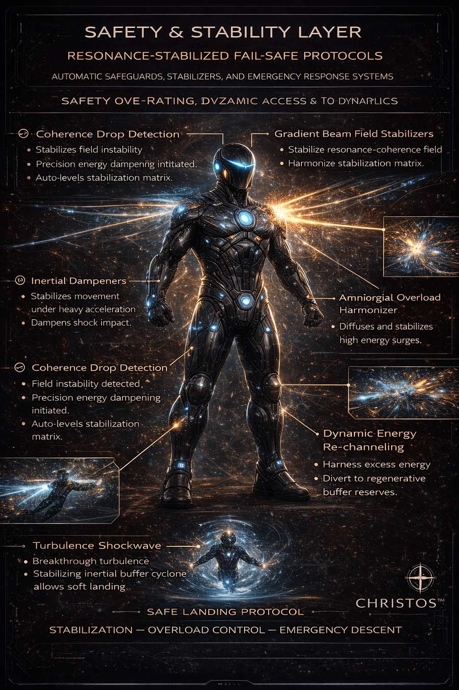
The complete engineering specifications for all five layers, including exact materials, dimensions, power figures, and node-array configurations, are not disclosed in this public version.
V. Add-On Systems and the Nexus Platform
The record proposes several add-on modules extending the core suit: a flight module for atmospheric and space mobility, a bio-crystalline healing module for proposed targeted cellular regeneration, a grounding and stabilization system, and an auxiliary power booster, together with a broader companion medical platform proposing a bio-resonant regeneration chamber environment.
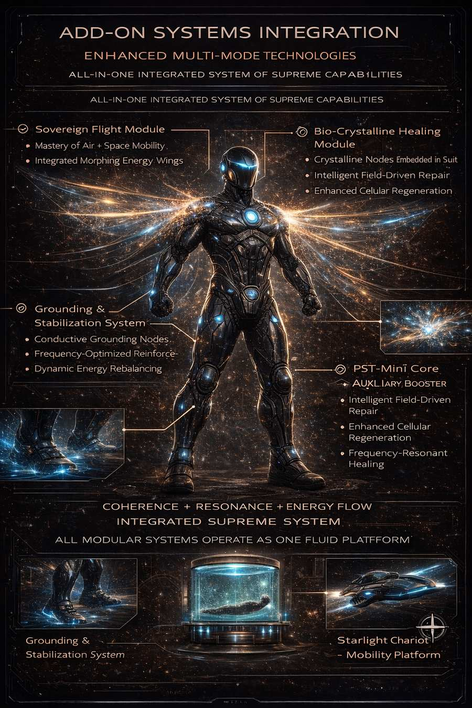
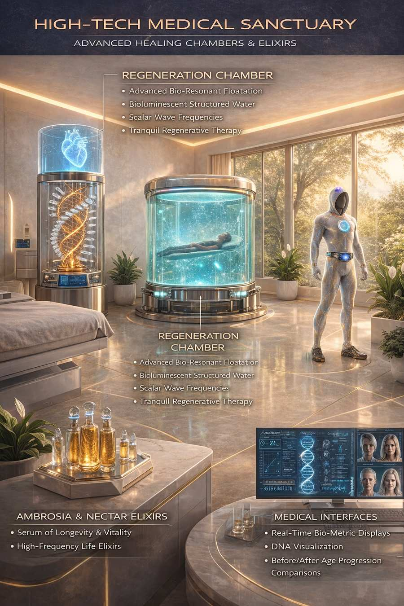
The Nexus System proposes the completion of this evolutionary arc: the suit as the central human-interface layer through which the personal craft family and medical systems described elsewhere in this library would be accessed, with add-on modules activating only when needed. None of this has been built or tested, and the complete specifications for every add-on and the Nexus integration architecture are not disclosed in this public version.
VI. A Note on Invention Numbering
The source material for this record assigns invention numbers INV-384 through INV-393 to the Resonance Suit family's components. These numbers overlap with a different set of inventions (a water flow conditioner, an ambient field power device, and others) already assigned the same range in the companion paper [[new-invention-family]] (DW-04). This page notes that overlap directly rather than silently resolving it; the two documents' invention numbering has not yet been reconciled.
Intellectual Property & Disclosure Statement
The complete Resonance Suit design lineage, all five generations, and the Nexus Unified Platform concept are original work of Joshua Farrior, claimed as intellectual property of Joshua Farrior / Christos™ Energy, Technology & Harmonic Design Consulting, LLC.
Withheld in full: the complete engineering specifications for every generation and layer, including materials, dimensions, power figures, winding or turn-count parameters, and node-array configurations; and the complete Phi-Steel Medical Resonance Chamber illustration, omitted from this public version in full. None of these systems has been built or tested. Nothing in this paper constitutes an operational device.
© 2026 Joshua Farrior · Christos™ Energy, Technology & Harmonic Design Consulting, LLC · All Rights Reserved · Business ID: 202511071941923 · Christos™ trademark pending USPTO review · christosenergy.com